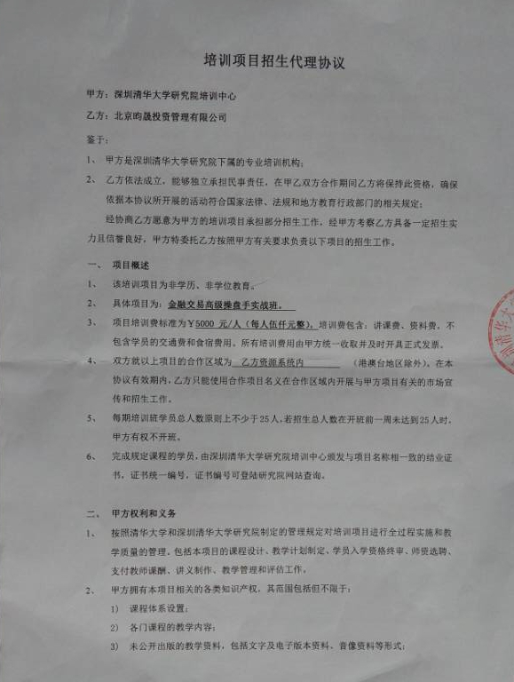

清华大学“金融交易高级操盘手实战班”第二期课程介绍
一、为了更好地普及投资与交易知识，培训与发掘高端交易人才，我的投资团队——北京昀晟投资管理有限公司（简称“昀晟投资”）将与清华大学深圳研究院培训中心（简称“清华培训中心”）合作开设“金融交易高级操盘手实战班”，本实战班培训内容涵盖外汇交易、商品期货交易、股指期货交易、股票交易等。“清华培训中心”具有合法办学资格，本实战班的开办符合相关的法律、法规。本实战班将理论与实战相结合，注重实战效果，其目的是为了让学员树立正确的投资与交易思想，建立适合自己的交易方法，以期能够获得长期稳定高收益，另外，本投资团队也期望能够从实战班学员中发现未来的高端交易人才。本实战班的授课老师，均为外汇、商品期货、股指期货、股票方面的具有丰富经验的机构操盘手。
实战班课程分为面授与网络授课两种方式，其中，面授地点为清华大学北京本部，网络课程通过QT多人在线语音教室授课。本实战班将在开课的同时，设立学员与老师交流互动的qq群，学员们可以藉此畅谈学习体会与实战心得。
二、我负责讲授该实战班的股票部分，先安排网络授课，其后也会视情况安排面授。首期股票网络课程内容为“大牛股主升浪战法”。本股票网络课程学时为一个月，每个月上12次正式课，3次答疑，点评个股课程。每节课2—3小时，正式课授课时间初步定为每周一、周三、周五晚上8点至11点左右，答疑课初步定在每周六或周日晚8点至10点。本股票网络正式课程采用循环讲授方式，每个月一期，一年共12期，各期正式课内容90%相同，但答疑课是根据当期学员所提问题设定，故每期均不相同。凡是在一年内交过一次学费的学员，若有疑问，想继续听课，可以在一年内免费继续上其它11期的课程。
“大牛股主升浪战法”课程提纲如下：
第1课：股票基础知识
第2课：抓大牛股主升浪才能够赚大钱
第3课：大牛股的分类方法
第4课：10类基本牛股深度解析（一）
第5课：10类基本牛股深度解析（二）
第6课：挖掘大牛股的方法（一）
第7课：答疑，点评个股
第8课：挖掘大牛股的方法（二）
第9课：主升浪的深度解析
第10课：主升浪的操作方法
第11课：答疑，点评个股
第12课：10类牛股主升浪分类战法（一）
第13课：10类牛股主升浪分类战法（二）
第14次课：怎样获取长期高收益
第15课：答疑，点评个股
若以上上课时间与课程提纲有变化，另外，若我有开设其它新的股票课程的计划，将及时通告。
三、本实战班的“大牛股主升浪战法”第二期计划于6月中旬开办，优惠价格为每人5000元。 以后每个月的第三周周一开始上课。
四、除了一个月的15次课程之外，每个班配备班主任，可以解答大家的一些技术性问题。
五、学员可以写邮件给班主任，然后由班主任总结一些较为普遍性的问题，我来解答，发送到群共享和公众微信。公众微信号：yunshengtz。非学员也可以通过这个微信号来关注我新发的文章
六、上课流程：咨询课程顾问→缴费→登记入学→上课。
七、若有任何问题，敬请咨询以下课程顾问：
课程顾问小婷，qq1736143829。
课程顾问媛媛，qq2413804304，手机18524115368。
特别提示：由于本实战班涉及外汇、期货、股票等课程，若网友希望听我的股票课程，则在用qq联系课程顾问时，在验证消息一栏中，请务必加上“股票课程”这四个字。
欢迎大家踊跃报名！期待与大家的互动。
七、附件：昀晟投资与清华培训中心签署的“培训项目招生代理协议”影印件：
